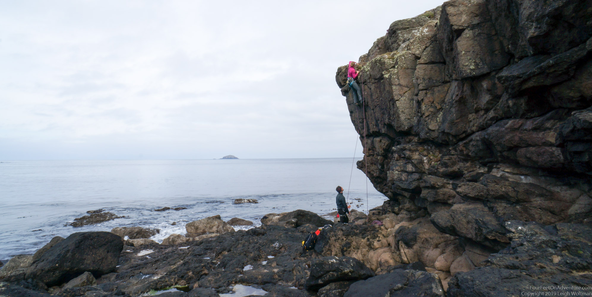
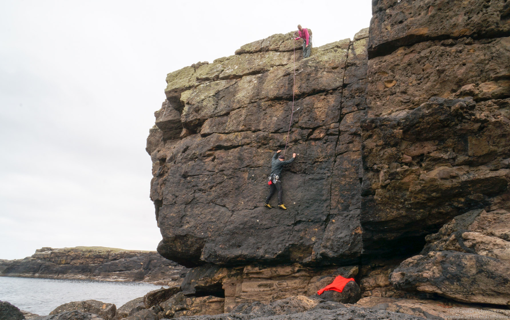
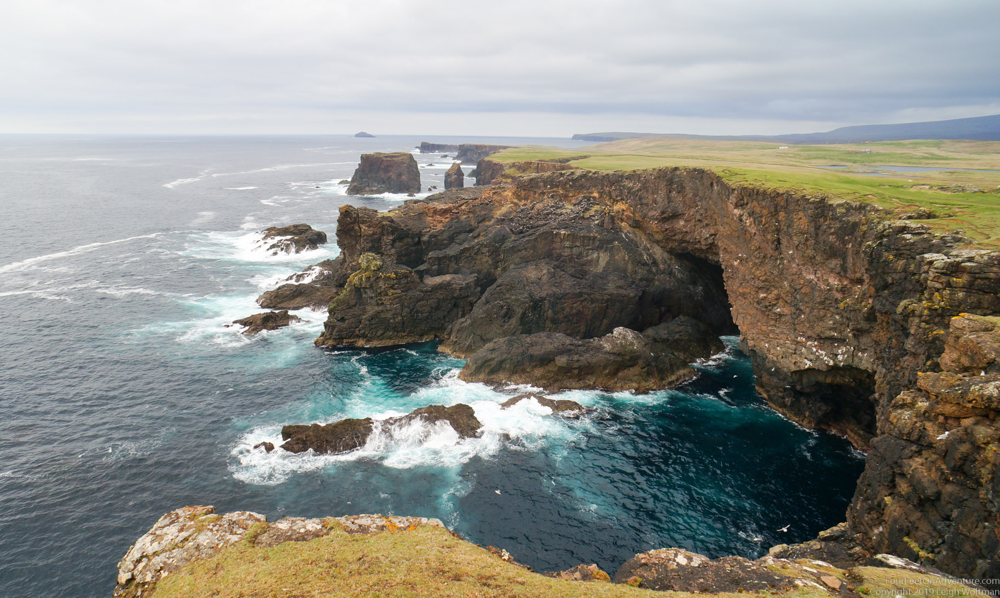
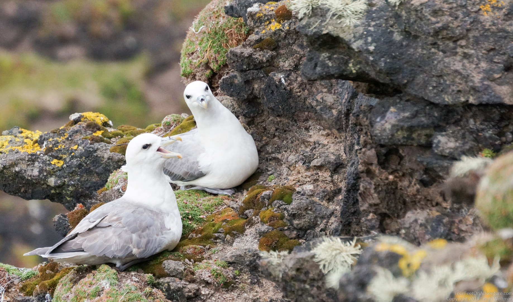
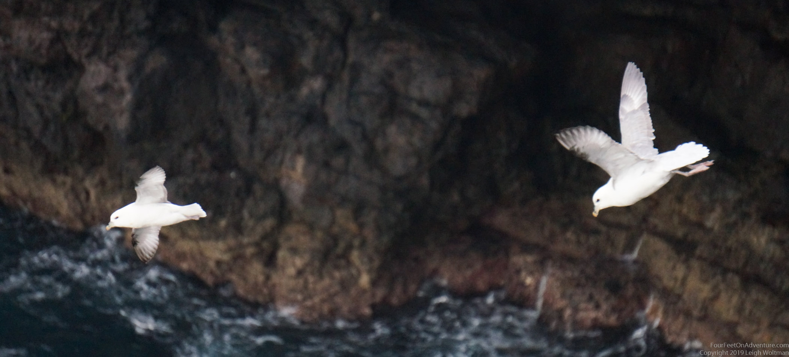
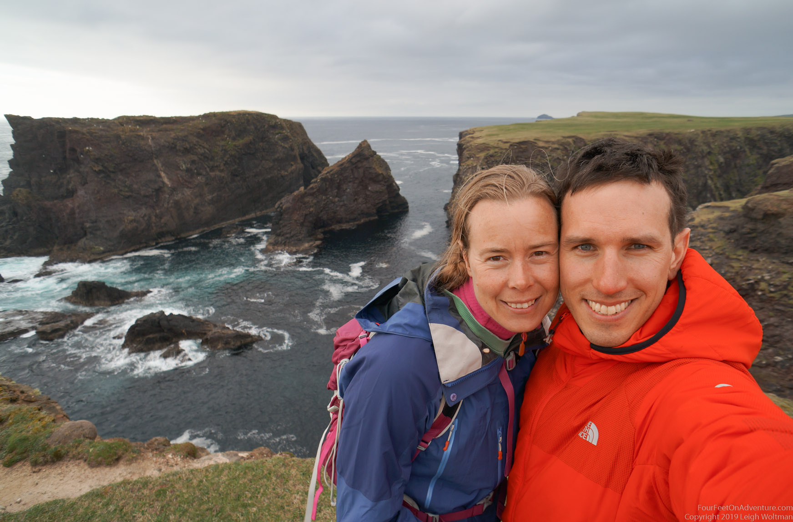

We started the day off with a bit of climbing. I didn’t have a climbing guide of the area, but found in a sport climbing book in the library a couple of sport climbing routes on sea cliffs. They were short, but interesting. Can’t just pass by a couple of climbs.. :).


Another amazing cliffy area on the Shetland islands, where I went for an amazing run. The fields all look like golf courses, and you just run on them, no trails most of the way, except that you need a stile to get over fences, so you usually run from stile to stile.



Next we went to the lighthouse at the end of this area, from where I was going for a run, and Leigh would start hiking the other way, so that we would meet somewhere. The lighthouse was a bit of a touristy spot, with a tour bus getting ready to find all their people and move to the next destination. After a bit of a run along the beautiful and amazing coastline, I bumped into the same bus again. The tourists were all looking at a house. It looked like a normal house to me. A little further, I came across 2 shetland ponies. Sooo cute! And very wild looking. It made my day, seeing a Shetland pony in the Shetlands!! I crossed the land to close to our climbing spot, and followed the coast back to where Leigh was. There were a couple of lakes, and one of them had a broch, a tower from the iron age (now a pile of rocks). Further I encountered Leigh, who couldn’t resist the temptation to try to take pictures of the fumar’s (see story on Hermaness) in flight. We explored the area a bit more, until it was time to head back. Another amazing place!
